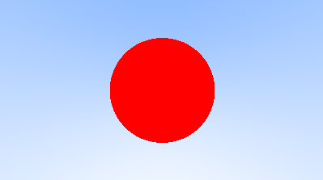
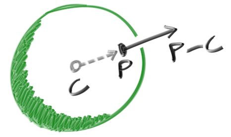
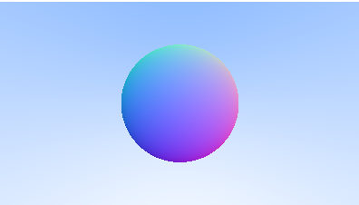

Ray Tracing in One Weekend - 2
在Ray Tracing in One Weekend - 1中我们已经实现了一些基本类，例如vec3, ray等。并且对Camera geometry有了基本的了解，能定义camera并生成渐变的图像。接下来我们从为ray tracer加一个球体开始继续探索吧！
Adding a Sphere
让我们在ray tracer中添加一个物体。人们通常使用球体，因为计算光线是否击中球体相对直接简单。
Ray-Sphere Intersection
回想一下，位于原点的半径为
如果球心在
在图形学中，你几乎总是希望使用向量来表达公式，这样所有的x, y, z相关的计算都可以在vec3类中进行。你可能已经注意到了从球心
所以用向量表示的球面方程即：
我们可以理解为“满足此等式的任意一点p一定在球体上”。我们还想知道射线
或者将
我们所需要的向量代数知识就到这里啦。如果我们展开表达式并且全都移项到左边就可以得到：
方程中的向量和

Creating Our First Raytraced Image
如果我们将这个数学计算编码到我们的程序中，我们可以通过在我们放置在z轴-1位置上的小球体上着红色的方式来进行测试。
1 | bool hit_sphere(const point3& center, double radius, const ray& r) { |
我们将得到下图：

现在这里还缺很多东西，比如着色，反射光线和多个物体的处理，但比起刚刚开始，我们距离完成一半的工作已经更接近了！需要注意的一点是，我们测试了光线是否与球体相交，但是对
Surface Normals and Multiple Objects
Shading with Surface Normals
首先让我们理解surface normal（表面法线）以便进行着色。surface normal是一个垂直于交点处所在的表面的向量。对于法线，我们有两个设计决策。第一个是这些法线是否是单位长度。对于着色来说，单位长度很方便，所以我会说“是”，但是我不会在代码里强行这么写。这可能会导致一些微妙的bug，因此请注意这是个人偏好，就像大多数设计决策一样。对于球体而言，outward normal（外向法线）的方向就是击中点减去球心的方向：

在地球上，这就意味着从地心指向你的向量垂直向上。现在让我把这个想法写进代码，并对其进行着色。现在还没有光源和其他东西，所以我们可以用color map来可视化法线。一个常见的可视化法线的技巧（因为假设表面法线

Simplifying the Ray-Sphere Intersection Code
让我们回顾一下光线与球体的方程式：
1 | double hit_sphere(const point3& center, double radius, const ray& r) { |
首先，回想一下，一个向量与它自己的点积等于它长度的平方。
第二，我们注意到在上述代码中变量b有一个常数项2。设
按照以上思路，我们可以将sphere-intersection的代码简化为：1
2
3
4
5
6
7
8
9
10
11
12
13
14
15double hit_sphere(const point3& center, double radius, const ray& r) {
vec3 oc = r.origin() - center;
auto a = r.direction().length_squared();
auto half_b = dot(oc, r.direction());
auto c = oc.length_squared() - radius * radius;
auto discriminant = half_b * half_b - a * c;
// calculate the smallest t
if (discriminant < 0.0) {
return -1.0;
}
else {
return (-half_b - sqrt(discriminant)) / (a);
}
}
An Abstraction for Hittable Objects
现在，我们考虑一下场景中有多个球体的情况。虽然使用一个球体数组的方案很直接诱人，但是一个非常清晰的解决方案是“为光线可能击中的任何物体创建一个抽象类，然后将球体和球体数组都视为可被击中的物体”。关于这个类叫什么名字，这有点困扰 - 如果不考虑”object oriented”的话，叫”object”可能很好；在我们出现要计算volumes的情况，叫”surface”也不太合适。”hittable”强调了将实体们统一起来的成员函数。以上名字我都不喜欢，但我会选择”hittable”。
hittable这个抽象类有一个接受光线的hit function。大多数ray tracer为了方便，都加入了一个区间
以下是hittable抽象类的代码：1
2
3
4
5
6
7
8
9
10
11
12
13
14
15
16
17
18
struct hit_record {
point3 p; // intersection point
vec3 normal; // the unit surface normal vector at the intersection point
double t; // parameter t at the intersection point
};
class hittable {
public:
virtual bool hit(const ray& r, double t_min, double t_max, hit_record& rec) const = 0;
};
以下是它的派生类sphere的代码：1
2
3
4
5
6
7
8
9
10
11
12
13
14
15
16
17
18
19
20
21
22
23
24
25
26
27
28
29
30
31
32
33
34
35
36
37
38
39
40
41
42
43
44
45
46
class sphere: public hittable {
public:
sphere() {};
sphere(vec3 cen, double r) : center(cen), radius(r) {};
virtual bool hit(
const ray& r, double t_min, double t_max, hit_record& rec) const override;
public:
vec3 center;
double radius;
};
bool sphere::hit(const ray& r, double t_min, double t_max, hit_record& rec) const {
vec3 oc = r.origin() - center;
auto a = r.direction().length_squared();
auto half_b = dot(oc, r.direction());
auto c = oc.length_squared() - radius * radius;
auto discriminant = half_b * half_b - a * c;
if (discriminant < 0) return false;
auto sqrtd = sqrt(discriminant);
// Find the nearest root that lies in the acceptable range.
auto root = (-half_b - sqrtd) / a;
if (root < t_min || root > t_max) {
// Find the farther one
root = (-half_b + sqrtd) / a;
if (root < t_min || root > t_max) return false;
}
rec.t = root;
rec.p = r.at(rec.t);
rec.normal = (rec.p - center) / radius;
return true;
}
Front Faces Versus Back Faces
第二个关于法线的设计决策是他们是否应该始终向外。到目前为止，法线的方向始终是从球心到intersection point（击中点）的方向，即法线指向外部。如果ray从外部与球体相交，则法线指向与ray 相反的方向。如果ray从内部与球体相交，则（始终向外的）法线与ray方向相同。另一种选择是，让法线始终指向射线的反方向。即如果ray从外部与球体相交，则法线指向外部；如果ray从内部与球体相交，则法线指向内部。

注：以上两种方案，对于ray从外部与球体相交的情况是一致的，即与ray方向相反，而ray从内部与球体相交有向内向外两种选择。
我们需要在这些可能性中选择一种，因为我们最终希望确定光线来自表面的哪一侧。这对于在每一侧用不同方式渲染的对象非常重要，比如双面纸上的文字，或者像玻璃球一样具有内部和外部的对象。
如果我们决定让法线始终指向外部（方案一），那么在上色是我们需要确定ray在物体的哪一侧。我们可以通过ray和normal的方向来判断。如果ray和normal方向相同，那么ray位于物体内部；如果方向相反，那么ray位于物体外部。这可以通过两个向量的点积来判断，如果他们的点积为正，则射线在物体内部，反之在物体外部。这里使用了点积的另一条公式:
1 | if (dot(ray_direction, outward_normal) > 0.0) { |
如果我们决定让法线始终只想ray的反方向，就不能用点乘来判断了。相反，我们应该存储这些信息：1
2
3
4
5
6
7
8
9
10bool front_face;
if (dot(ray_direction, outward_normal) > 0.0) {
// ray is inside the sphere
normal = -outward_normal;
front_face = false;
} else {
// ray is outside the sphere
normal = outward_normal;
front_face = true;
}
注: front_face == true意味着surface normal指向外部，即正面；front_face == false意味着surface normal指向内部，即反面；
我们可以使法线始终指向外部，或者始终逆着入射光的方向。这个决策取决于你希望在几何相交阶段还是在着色阶段决定法线在表面的哪一侧。在本书中，我们拥有比几何类型更多的材质类型，因此我们将选择更少的工作量，并将这个决策放在几何相交阶段进行。这只是个简单的偏好问题，在文献中你会看到两种实现方式。
我们为hit_record结构体添加一个名为front_face的bool值，当然我们也会加入一个函数为我们计算这个值。现在struct hit_record的实现如下：
1 | struct hit_record { |
并在覆盖sphere::hit函数时，调用set_face_normal函数来计算并记录法线的方向。
1 | rec.t = root; |
A List of Hittable Objects
注：如果你不熟悉c++的一些特性例如vector或者shared_ptr，我推荐先看下一小节再倒回来看这一小节。
现在，我们有了一个名为hittable的抽象类，光线可以与之相交。现在我们来添加一个类以存储hittable的列表：
1 |
|
Some New C++ Features
如果你平时不是c++程序员，hittable类使用了两个可能会使你遇到困难的c++特性：vector和shared_ptr。
shared_ptr<type>是指向某些已分配类型的指针，并具有引用计数语义。每当你将其赋值给另一个shared pointer（通常使用简单的赋值语句），引用计数会递增。当shared_ptr超出作用域（比如在block或是function的末尾），引用计数会减少。一旦计数变成零，对象将会被删除。
通常，可以通过新分配的对象来初始化一个shared_pointer，例如：1
2
3shared_ptr<double> double_ptr = make_shared<double>(0.37);
shared_ptr<vec3> vec3_ptr = make_shared<vec3>(1.414214, 2.718281, 1.618034);
shared_ptr<sphere> sphere_ptr = make_shared<sphere>(point3(0, 0, 0), 1.0);
make_shared<thing>(thing_constructor_params ...)按照constructor params为给定的thing类型分配一个新实例，并返回一个shared_ptr<thing>。
由于类型可以通过make_shared<type>(...)返回类型的自动推导来确定，上面的代码可以通过auto类型来简化：1
2
3auto double_ptr = make_shared<double>(0.37);
auto vec3_ptr = make_shared<vec3>(1.414214, 2.718281, 1.618034);
auto sphere_ptr = make_shared<sphere>(point3(0, 0, 0), 1.0);
我们在代码中使用了shared pointer，因为它允许多个几何体共享一个公共实例（例如，一组使用相同纹理贴图材质的球体），并且它能自动内存管理且易于理解。
std::shared_ptr被包含在<memory>头文件中。
第二个你可能不太熟悉的特性是std::vector。这是一个类似数组的通用容器，可以容纳任意类型的元素。在上面的代码中，我们使用了一个包含指向hittable类指针的容器。vector会在添加更多元素时自动增长：（hitttable_list类中，）使用objects.push_back(object)可以将值添加到std::vector类型的成员变量objects的末尾。
std::vector被包含在<vector>头文件中。
最后，hittable_list.h在开头部分用using语法告诉编译器。shared_ptr和make_shared是来自std库的。这样，我们每次使用它就不需要加上std::前缀了。